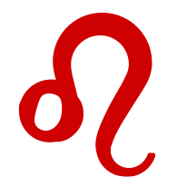

Áries
Áries é o primeiro signo do zodíaco, regido pelo planeta Marte e associado ao elemento Fogo, são frequentemente descritas com as seguintes características: Liderança, coragem, competitividade, paixão, sinceridade e etc.
Touro
Touro é o segundo signo do zodíaco, regido pelo planeta Vênus e associado ao elemento Terra, são frequentemente descritas com as seguintes características: Determinação, praticidade, lealdade, pacientes, teimosia e etc.
Gêmeos
Gêmeos é o terceiro signo do zodíaco, regido pelo planeta Mercúrio e associado ao elemento Ar, são frequentemente descritas com as seguintes características: Adaptabilidade, curiosidade, comunicação, intelectualidade, sociabilidade, versatilidade e etc.
Câncer
Câncer é o quarto signo do zodíaco, regido pela Lua e associado ao elemento Água, são frequentemente descritas com as seguintes características: sensibilidade, intuição, lealdade, família, empatia, ência e etc

Leão
Leão é o quinto signo do zodíaco, regido pelo Sol e associado ao elemento Fogo, são frequentemente descritas com as seguintes características: carisma, generosidade, criatividade, lealdade, determinação, orgulho e etc.
Virgem
Virgem é o sexto signo do zodíaco, regido pelo planeta Mercúrio e associado ao elemento Terra, são frequentemente descritas com as seguintes características: organização, praticidade, analíticos, perfeccionismo, mnteligência, modéstia e etc.
Libra
Libra é o sétimo signo do zodíaco, regido pelo planeta Vênus e associado ao elemento Ar, são frequentemente descritas com as seguintes características: Equilíbrio, diplomacia, romantismo, elegância, empatia, intelectualidade e etc.
Escorpião
Escorpião é o oitavo signo do zodíaco, regido pelos planetas Marte e Plutão, e associado ao elemento Água, são frequentemente descritas com as seguintes características: Intensidade, determinação, paixão, lealdade, profundidade, resiliência e etc
Sagitário
Sagitário é o nono signo do zodíaco, regido pelo planeta Júpiter e associado ao elemento Fogo, são frequentemente descritas com as seguintes características: Otimismo, aventura, sinceridade, generosidade, bom humor, idealismo e etc.
Capricórnio
Capricórnio é o décimo signo do zodíaco, regido pelo planeta Saturno e associado ao elemento Terra, são frequentemente descritas com as seguintes características: Ambição, praticidade, responsabilidade, paciência, prudência, ambiente familiar e etc.
Aquário
Aquário é o décimo primeiro signo do zodíaco, regido pelo planeta Urano (e tradicionalmente por Saturno) e associado ao elemento Ar, são frequentemente descritas com as seguintes características: Independência, amigabilidade, rebeldia, visão de futuro, determinados, imprevisibilidade e etc.

Peixes
Peixes é o décimo segundo signo do zodíaco, regido pelo planeta Netuno (e tradicionalmente por Júpiter) e associado ao elemento Água, são frequentemente descritas com as seguintes características: Sensibilidade, intuição, criatividade, compaixão, sonhadores, generosidade e etc.